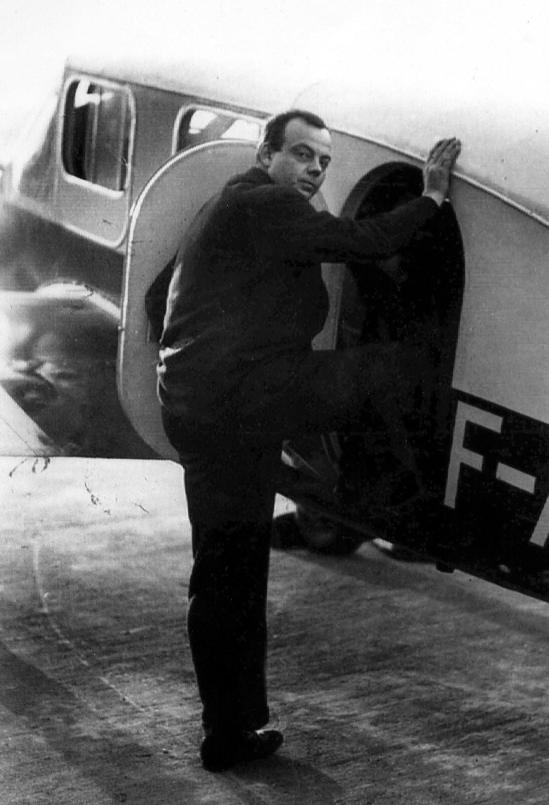

האיש שמאחורי הנסיך הקטן
אנטואן דה סנט־אכזופרי (1900–1944) היה סופר, עיתונאי, מאייר וטייס צרפתי. הוא חי בתקופה שבה הטיסה עדיין הייתה הרפתקה מסוכנת, והיה מחלוצי טיסות הדואר האווירי. במסגרת עבודתו טס מעל מדבר סהרה ובדרום אמריקה, לעיתים במסלולים קשים ובתנאים קיצוניים. השעות הארוכות בשמיים, תחושת הבדידות, הסכנות שחווה והחברויות שנוצרו בין הטייסים השפיעו עמוקות על כתיבתו.
נושאים כמו אומץ, אחריות, קשר בין בני אדם והחיפוש אחר משמעות הופיעו ביצירותיו עוד לפני שכתב את ״הנסיך הקטן״.

כשהמציאות הפכה לסיפור
בשנת 1935, במהלך ניסיון לשבור את שיא הטיסה מפריז לסייגון, התרסק מטוסו של סנט־אכזופרי בלב מדבר סהרה. הוא והמכונאי שטס עמו שרדו כמה ימים כמעט ללא מים, עד שחולצו. קשה שלא לזהות את עקבות החוויה הזו בפתיחת ״הנסיך הקטן״: טייס שמטוסו מתקלקל בלב המדבר, הרחק מכל יישוב, פוגש לפתע ילד מסתורי שמבקש ממנו לצייר כבשה.
הספר אינו תיאור של האירוע האמיתי, אבל המדבר, המטוס, הבדידות והמפגש עם הלא־נודע הגיעו מעולם שסנט־אכזופרי הכיר היטב.
הספר שנכתב הרחק מהבית
במהלך מלחמת העולם השנייה, לאחר נפילת צרפת, עבר סנט־אכזופרי לארצות הברית. רחוק ממולדתו, בתקופה של מלחמה וגעגועים לבית, כתב ואייר בניו יורק את ״הנסיך הקטן״. הספר ראה אור בניו יורק בשנת 1943, בצרפתית ובאנגלית.
בצרפת עצמה הוא פורסם רק בשנת 1946, כשנתיים לאחר מותו של סנט־אכזופרי. אולי אין זה מקרי שספר שנכתב הרחק מן הבית עוסק כל כך הרבה בפרידה, בגעגוע, בקשרים שאנחנו יוצרים ובשאלה מה הופך מקום - או אדם - ליקר לנו.
הטיסה האחרונה
גם לאחר שהתפרסם כסופר, סנט־אכזופרי לא ויתר על הטיסה. ב־31 ביולי 1944 המריא מקורסיקה למשימת צילום מעל דרום צרפת - ולא חזר. במשך יותר מחמישים שנה נותר גורלו בגדר תעלומה. בסוף שנות התשעים נמצא בים צמיד שנשא את שמו, ובהמשך אותרו גם שרידי מטוסו סמוך לחופי מרסיי.
סנט־אכזופרי היה בן 44 בלבד. הוא לא זכה לראות כיצד הספר הקטן שכתב הופך לאחת היצירות האהובות בעולם.
ספר שאין לו גיל
מאז פרסומו נמכר ״הנסיך הקטן״ במאות מיליוני עותקים ותורגם למאות שפות וניבים. אולי סוד כוחו טמון בכך שאין לו גיל אחד. ילדים יכולים לקרוא בו סיפור על נסיך קטן, שועל, שושנה, נחש וכוכבים רחוקים; מבוגרים מוצאים באותם מפגשים שאלות על אהבה ואובדן, חברות ובדידות, אחריות ומשמעות.
יותר משמונים שנה לאחר שנכתב, ״הנסיך הקטן״ עדיין מצליח לעשות דבר נדיר: לגרום לילדים ולמבוגרים לעצור לרגע, להתבונן בעולם המוכר בעיניים אחרות - ולשאול מחדש מה באמת חשוב.